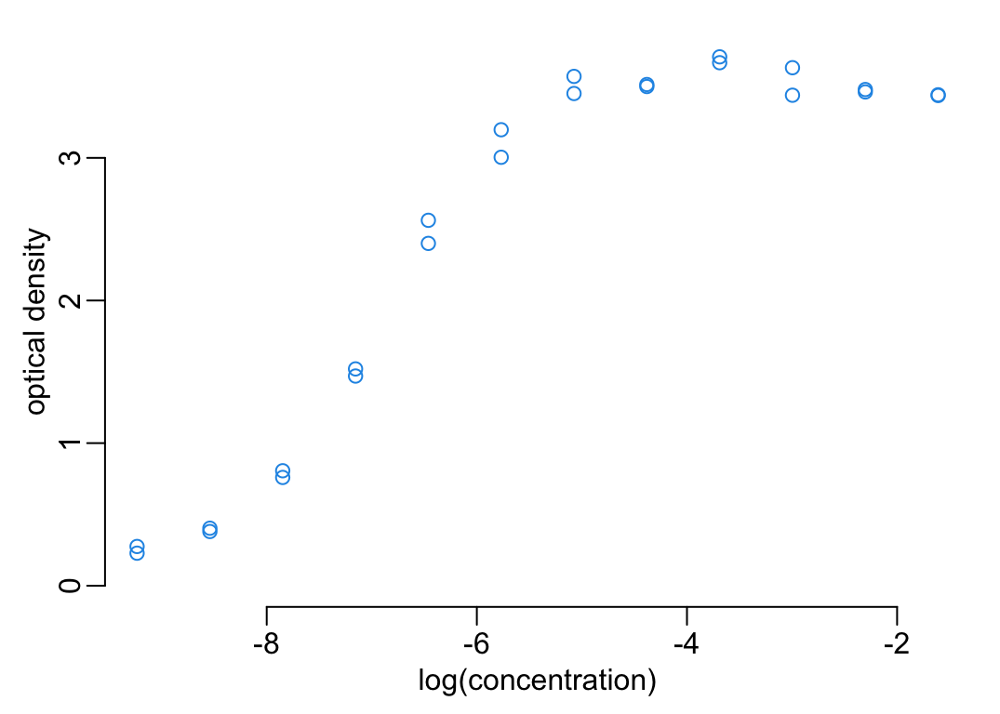
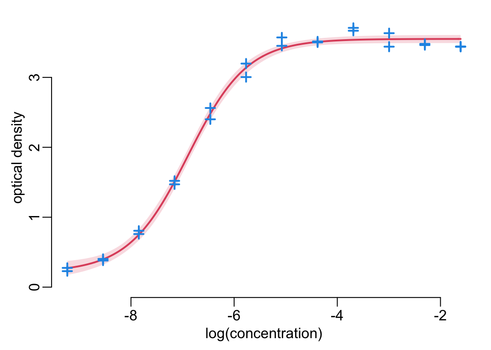

ref_conc <- 10Title
1 Parameters
The concentration of the reference anti-toxin 10 IU/mL:
The path to the data:
path2data <- paste0(Sys.getenv("HOME"), "/Library/CloudStorage/",
"OneDrive-OxfordUniversityClinicalResearchUnit/",
"GitHub/choisy/tetanus/")The name of the data file:
datafile <- "Tetanus_Dr. Thinh_HCDC samples.xlsx"2 Packages
Required packages:
required_packages <- c("dplyr", "tibble", "readxl", "purrr", "mvtnorm")Installing those that are not installed:
to_inst <- required_packages[! required_packages %in% installed.packages()[,"Package"]]
if (length(to_inst)) install.packages(to_inst)Loading some for interactive use:
library(dplyr)
library(purrr)3 Functions
Tuning some base functions:
lwd_val <- 2
color_data <- 4
color_model <- 2
read_excel2 <- function(file, ...) readxl::read_excel(paste0(path2data, file), ...)
excel_sheets2 <- function(file) readxl::excel_sheets(paste0(path2data, file))
plot2 <- function(...) plot(..., col = color_data)
seq2 <- function(...) seq(..., le = 512)
plotl <- function(...) plot(..., type = "l", col = color_model, lwd = lwd_val)
points2 <- function(...) points(..., col = color_data, pch = 3, lwd = lwd_val)
lines2 <- function(...) lines(..., col = color_model, lwd = lwd_val)
print_all <- function(x) print(x, n = nrow(x))
polygon2 <- function(x, y1, y2, ...) {
polygon(c(x, rev(x)), c(y1, rev(y2)), border = NA, ...)
}4 Preparing the data
A function that removes the plate tab that do not contains any data:
remove_empty_plates <- function(x) x[map_lgl(x, ~ ! all(is.na(.x$RESULT)))]A function that adds the sample ID whenever missing:
add_sample_id <- function(x) {
id <- x$HCDC_SAMPLE_ID
x$HCDC_SAMPLE_ID <- grep("Anti", id, value = TRUE, invert = TRUE) |>
na.exclude() |>
unique() |>
rep(each = 3) |>
c(grep("Anti", id, value = TRUE))
x
}Reading and arranging the data:
plates <- datafile |>
excel_sheets2() |>
(\(.x) .x[grepl("Plate", .x)])() |>
(\(.x) setNames(map(.x, read_excel2, file = datafile), .x))() |>
map(~ setNames(.x, toupper(names(.x)))) |>
remove_empty_plates() |>
map(add_sample_id) |>
map(~ mutate(.x, od = RESULT - mean(c_across(starts_with("BLANK")))))5 Exploring plate 1
plate1 <- plates[[1]] |>
mutate(od = RESULT - mean(c_across(starts_with("BLANK"))))5.1 Calibrating the standard curve
anti_toxin <- plate1 |>
filter(HCDC_SAMPLE_ID == "Anti_toxin") |>
mutate(concentration = ref_conc / DILUTION_FACTORS)
with(anti_toxin, plot2(log(concentration), od, ylim = c(0, max(od)),
ylab = "optical density"))
A 4-parameter logistic model that relates optical density \(\mbox{OD}\) to the logarithm of the concentration \(\mbox{LC}\):
\[ \mbox{OD} = d + \frac{a - d}{1 + e^{\left(\mbox{LC} - c\right)b}} \]
where:
- \(a\) is the minimum \(\mbox{OD}\), i.e. when the concentration is \(0\);
- \(d\) is the maximum \(\mbox{OD}\), i.e. when the concentration is \(+\infty\);
- \(c\) is the \(\mbox{LC}\) of the point of inflexion, i.e. where \(\mbox{OD} = (d - a) / 2\);
- \(b\) is the Hill’s slope of the curve, i.e. of the curve at the inflexion point.
starting_values <- function(x, y) {
nb_rep <- unique(table(x))
the_order <- order(x)
x <- x[the_order]
y <- y[the_order]
a <- min(y)
d <- max(y)
list(a = a, b = 2, c = approx(y, x, (d - a) / 2, ties = "ordered")$y, d = d)
}standard_curve <- function(anti_toxin_data) {
out <- nls(od ~ d + (a - d) / (1 + exp((log(concentration) - c) * b)),
anti_toxin_data,
with(anti_toxin_data, starting_values(log(concentration), od)))
out$data <- anti_toxin_data
out
}predict_sim <- function(model, le = 512, level = .95, nb = 9999) {
alpha <- (1 - level) / 2
data <- model$data
log_concentration <- log(data$concentration)
xs <- seq(min(log_concentration), max(log_concentration), le = le)
out <- nb |>
mvtnorm::rmvnorm(coef(model), vcov(model)) |>
as.data.frame() |>
rowwise() |>
mutate(predictions = list(d + (a - d) / (1 + exp((xs - c) * b)))) |>
pull(predictions) |>
as.data.frame() |>
t() |>
as.data.frame() |>
map_dfr(quantile, c(alpha, .5, 1 - alpha))
attr(out, "data") <- data
attr(out, "xs") <- xs
out
}plot_predictions <- function(model) {
data <- model$data
log_concentration <- log(data$concentration)
xs <- exp(seq2(min(log_concentration), max(log_concentration)))
predictions <- predict(model, data.frame(concentration = xs))
plotl(log(xs), predictions, ylim = c(0, max(data$od, predictions)),
xlab = "log(concentration)", ylab = "optical density")
with(data, points2(log(concentration), od))
}plot_predictions_ci <- function(predictions) {
xs <- attr(predictions, "xs")
data <- attr(predictions, "data")
y <- predictions$`97.5%`
plot(xs, y, ylim = c(0, max(data$od, y)), type = "n",
xlab = "log(concentration)", ylab = "optical density")
with(predictions, {
polygon2(xs, `2.5%`, `97.5%`, col = adjustcolor(color_model, .2))
lines2(xs, `50%`)
})
with(data, points2(log(concentration), od))
}fitted4PL <- standard_curve(anti_toxin)
#plot_predictions(fitted4PL)
predictions <- predict_sim(fitted4PL, le = 512, level = .95, nb = 9999)
plot_predictions_ci(predictions)
5.2 Converting OD to concentrations
data2function <- function(data) {
xs <- attr(data, "xs")
lower <- data$`2.5%`
median <- data$`50%`
upper <- data$`97.5%`
pred_lower <- function(x) approx(upper, xs, x)$y
pred_median <- function(x) approx(median, xs, x)$y
pred_upper <- function(x) approx(lower, xs, x)$y
function(x) c(lower = pred_lower(x), median = pred_median(x), upper = pred_upper(x))
}od2logconcentration <- data2function(predictions)samples <- plate1 |>
filter(HCDC_SAMPLE_ID != "Anti_toxin") |>
rowwise() |>
mutate(logconcentration = list(od2logconcentration(RESULT))) |>
tidyr::unnest_wider(logconcentration)samples |>
filter(is.na(median)) |>
pull(od) |>
range()[1] 3.287333 3.708333samples |>
mutate(missing = is.na(lower) + is.na(median) + is.na(upper)) |>
group_by(DILUTION_FACTORS) |>
group_split() |>
map(~ sum(.x$missing))[[1]]
[1] 63
[[2]]
[1] 52
[[3]]
[1] 366 Processing all the plates
6.1 Standard curves
antitoxins <- plates |>
map(~ .x |>
filter(HCDC_SAMPLE_ID == "Anti_toxin") |>
mutate(concentration = ref_conc / DILUTION_FACTORS))30”:
predictions <- antitoxins |>
map(~ .x |>
standard_curve() |>
predict_sim())walk(predictions, plot_predictions_ci)converting_functions <- map(predictions, data2function)6.2 Samples
samples <- plates |>
map(filter, HCDC_SAMPLE_ID != "Anti_toxin") |>
map2(converting_functions,
~ .x |>
rowwise() |>
mutate(logconcentration = list(.y(RESULT))) |>
tidyr::unnest_wider(logconcentration))NA_locations <- function(x) {
c(l = nrow(filter(x, is.na(lower), ! is.na(median), ! is.na(upper))),
lm = nrow(filter(x, is.na(lower), is.na(median), ! is.na(upper))),
all = nrow(filter(x, is.na(lower), is.na(median), is.na(upper))),
um = nrow(filter(x, ! is.na(lower), is.na(median), is.na(upper))),
u = nrow(filter(x, ! is.na(lower), ! is.na(median), is.na(upper))))
}NA_locations_split <- function(x) {
list(l = filter(x, is.na(lower), ! is.na(median), ! is.na(upper)),
lm = filter(x, is.na(lower), is.na(median), ! is.na(upper)),
all = filter(x, is.na(lower), is.na(median), is.na(upper)),
um = filter(x, ! is.na(lower), is.na(median), is.na(upper)),
u = filter(x, ! is.na(lower), ! is.na(median), is.na(upper)))
}This suggests that the more diluted the samples, the better:
map_dfr(samples, ~ .x |> NA_locations_split() |> map_dbl(nrow)) |>
print_all()# A tibble: 22 × 5
l lm all um u
<dbl> <dbl> <dbl> <dbl> <dbl>
1 0 0 49 1 2
2 0 0 18 7 4
3 0 0 23 1 2
4 0 0 18 6 1
5 0 0 40 1 0
6 0 0 51 0 0
7 0 0 36 9 1
8 0 0 41 1 2
9 0 0 27 0 4
10 0 0 38 3 1
11 1 1 38 2 2
12 0 0 29 6 2
13 0 0 46 1 0
14 0 0 24 4 2
15 0 0 36 2 1
16 0 0 28 7 5
17 0 0 32 2 4
18 1 0 51 5 1
19 0 0 42 1 3
20 0 0 46 1 2
21 2 1 38 2 3
22 0 0 43 1 1ranges <- map_dfr(samples, ~ .x |>
filter(is.na(lower) | is.na(median) | is.na(upper)) |>
pull(od) |>
range() |>
setNames(c("min", "max")))
print_all(ranges)# A tibble: 22 × 2
min max
<dbl> <dbl>
1 3.24 3.71
2 3.62 3.87
3 3.48 3.80
4 3.52 3.84
5 2.61 3.30
6 3.46 3.65
7 3.54 3.83
8 3.66 3.86
9 3.03 3.63
10 3.25 3.69
11 0.201 3.93
12 3.57 3.90
13 2.99 3.48
14 3.60 3.83
15 3.69 3.86
16 3.69 3.88
17 3.52 3.89
18 0.308 3.84
19 3.46 3.82
20 3.70 3.86
21 0.00633 3.81
22 3.55 3.84threshold <- .31
samples[which(ranges$min < threshold)] |>
map(~ filter(.x,
HCDC_SAMPLE_ID %in% pull(filter(.x, od < threshold), HCDC_SAMPLE_ID)) |>
select(HCDC_SAMPLE_ID, DILUTION_FACTORS, RESULT, od, lower, median, upper))$Plate_12_hcdc
# A tibble: 3 × 7
HCDC_SAMPLE_ID DILUTION_FACTORS RESULT od lower median upper
<chr> <dbl> <dbl> <dbl> <dbl> <dbl> <dbl>
1 U07B522205149 50 0.879 0.808 -7.67 -7.51 -7.37
2 U07B522205149 100 0.419 0.348 NA -8.43 -8.07
3 U07B522205149 200 0.272 0.201 NA NA -8.60
$Plate_19_hcdc
# A tibble: 3 × 7
HCDC_SAMPLE_ID DILUTION_FACTORS RESULT od lower median upper
<chr> <dbl> <dbl> <dbl> <dbl> <dbl> <dbl>
1 U07B532300109 50 1.18 1.02 -7.77 -7.67 -7.58
2 U07B532300109 100 0.691 0.530 -8.34 -8.18 -8.05
3 U07B532300109 200 0.469 0.308 NA -8.65 -8.42
$Plate_22_hcdc
# A tibble: 6 × 7
HCDC_SAMPLE_ID DILUTION_FACTORS RESULT od lower median upper
<chr> <dbl> <dbl> <dbl> <dbl> <dbl> <dbl>
1 U07B522205294 50 0.625 0.437 -8.28 -8.01 -7.81
2 U07B522205294 100 0.427 0.239 NA -8.89 -8.31
3 U07B522205294 200 0.329 0.141 NA NA -8.80
4 U07B522205309 50 0.484 0.296 NA -8.48 -8.13
5 U07B522205309 100 0.267 0.0793 NA NA NA
6 U07B522205309 200 0.194 0.00633 NA NA NA 7 Plots
# this is for a 3 x 3 plot